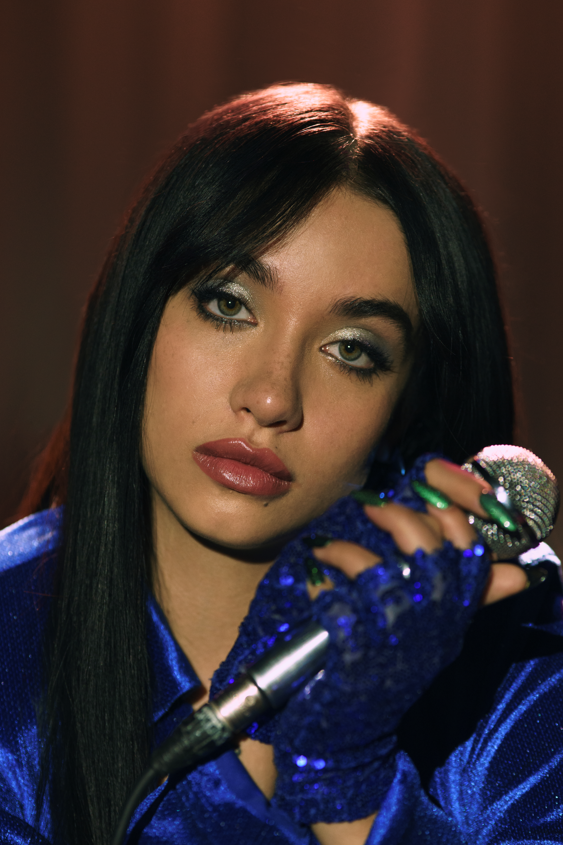
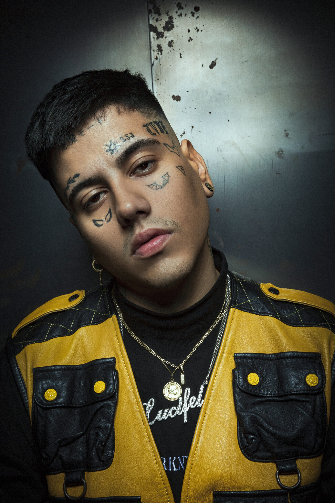

Maria Becerra
Maria Becerra es una cantante, youtuber e influencer argentina que hace música pop urbana. Nació el 12 de febrero de 2000 en Quilmes, Buenos Aires.
A los 12 años comenzó haciendo videos que subía a Facebook.
Nicki Nicole

Nicki Nicole es una cantante y compositora argentina de pop, soul y música urbana. Su verdadero nombre es Nicole Denise Cucco, y nació el 25 de agosto de 2000 en la ciudad de Rosario.
Duki
Duki es un freestyler y cantante argentino. Nació como Mauro Ezequiel Lombardo en Buenos Aires el 24 de junio de 1996.
Lit Killah

Lit Killah, nacido en Salta como Mauro Monzón, es un freestyler argentino. En 2013 empezó a ver videos de Freestyle y naturalmente empezaron a brotarle sus propias rimas.
Tini

Martina Stoessel, conocida artísticamente como Tini, es una cantante, actriz y compositora argentina nacida el 21 de marzo de 1997 en Buenos Aires.
Emilia Mernes

María Emilia Mernes, conocida artísticamente como Emilia, es una cantante pop, demás es compositora, bailarina y modelo argentina. Nació el 29 de octubre de 1996 y fue criada en Nogoyá, Entre Ríos.
Rusherking

Thomás Nicolás Tobar, conocido artísticamente como "Rusherking", es un artista de trap argentino.
KHEA

Ivo Alfredo Thomas Serue, más conocido como KHEA, es un cantante y compositor argentino referente del Trap.
Tiago PZK

Tiago Uriel Pacheco, más conocido como Tiago PZK es un freestyler y cantante argentino.